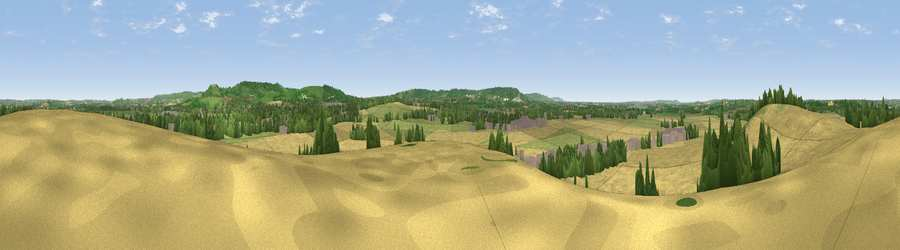

Viewpoint near Cheddington
#24244 in England · top 26% of its area beats it · near Cheddington · access?Where it is
The exact computed spot (SP 91925 16525). Click the marker for map links.
Public access: no public right of way or access land is recorded at this exact spot — it may be on private land. Computed from Natural England's CRoW access layer and OpenStreetMap rights of way — not the legal definitive map. Always verify locally.
The view, rendered

A 360° render of this exact spot computed from the terrain model, tree cover and land cover — summer colours, afternoon light, calibrated against photographs of famous viewpoints. Real trees, hedges and buildings will differ in detail.
The panorama
Grey silhouette: terrain skyline in each direction (720 bearings, Earth curvature and refraction included). Dashed green: skyline with trees (+15 m) and buildings (+8 m) as obstacles. Blue strip: how far the ground is visible on each bearing.
Where the view opens
Wedge length = distance to the farthest visible ground on that bearing (vegetation-aware). Rings at 10, 25 and 50 km.
What fills the view
61% cropland · 24% grassland · 11% woodland · 5% built-up
Angular shares of the visible panorama (visual magnitude), not map area. Landscape diversity 0.45 (0–1 Shannon).
Key numbers
More beautiful places nearby
The staircase of upgrades: each row has a higher view potential than everything closer. Driving times are estimates from straight-line distance, calibrated against real road routing — check an actual route before setting out.
| Place | Direction | Drive | Score |
|---|---|---|---|
| Paul’s Knob | ESE · 4 km | ~9 min | 58.6 |
| Viewpoint near Tring Station | SE · 4 km | ~9 min | 68.5 |
| Beacon Hill | E · 4 km | ~9 min | 74.1 |
| Viewpoint near Halton | SSW · 7 km | ~15 min | 74.3 |
| Coombe Hill Monument | SW · 12 km | ~22 min | 75.5 |
| Viewpoint near Woolstone | WSW · 69 km | ~92 min | 76.7 |
| Viewpoint near Meon Vale | WNW · 80 km | ~104 min | 77.0 |
| Broadway Hill | WNW · 83 km | ~107 min | 77.7 |
51.83977, -0.66715 · source: screening · position refined by local search. Computed location — check access rights before visiting.